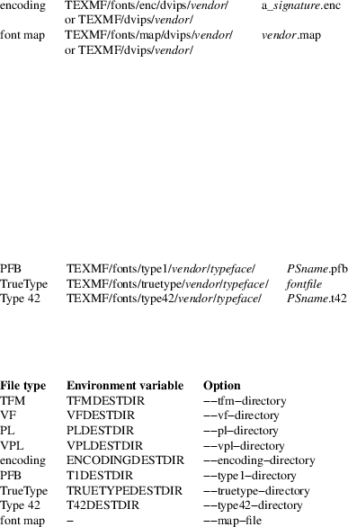
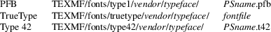
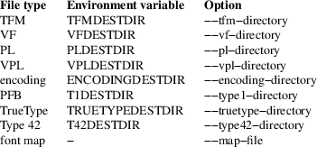

otftotfm − create TeX font metrics from OpenType fonts
otftotfm [−a] [options] fontfile [texname]
Otftotfm creates the font metric and encoding files required to use an OpenType font with TeX. You supply an OpenType ".otf" or ".ttf" font file, a base ".enc" encoding, and a TeX name "texname" for the resulting font, and say which OpenType features should be turned on. Then otftotfm generates and installs the corresponding TeX-related metric files (".tfm" TeX font metrics, ".vf" virtual fonts, and ".enc" encoding files). It works on both PostScript-flavored and TrueType-flavored OpenType fonts, although TrueType-flavor support will only work easily with pdftex.
The easiest way to use otftotfm is with the −a option; see Automatic Mode below. Without −a, otftotfm writes all its output files to the current directory.
After running "otftotfm fontfile texname" and installing the results (manually or with −a), you can use the OpenType font in plain TeX with a command like this:
\font\myfont=texname
at 10pt
{\myfont This text uses the OpenType font.}
LaTeX users will generally make a ".fd" input file so that commands like "\renewcommand{\rmdefault}{TeXName}" work correctly. See the EXAMPLE section for more; check the DIAGNOSTICS and FREQUENTLY ASKED QUESTIONS sections if you have trouble.
OpenType
Features
OpenType fonts support optional features that change
their appearance. Use the −f option to turn on
selected features. For example,
"−fsmcp" replaces lower-case letters
with the corresponding small capitals, in fonts that support
this.
You’ll generally provide at least the "−fkern" and "−fliga" options, which activate pair kerns and f-ligatures. Other interesting features include "−fcpsp", for capital spacing; "−fdlig", for optional ligatures; "−flnum", "−fonum", "−fpnum", and "−ftnum", to control digit glyphs; "−fsmcp", for small capitals; "−fswsh", for swash variants; and "−fcswh", for contextual swash. See the FEATURE DIRECTORY section below for more. The otfinfo(1) program will report which features a font supports; run "otfinfo −f fontfile".
Feature options can also apply a feature to a subset of characters in the font. For example, "−−lf smcp" only replaces letters with small capitals, whereas "−fsmcp" might additionally replace digits and punctuation marks with small-capital versions.
Automatic
Mode
Automatic mode, triggered by the
−a/−−automatic option,
installs font metrics and encoding files where TeX can find
them, and additionally installs a Type 1 font and mapping
for dvips(1). This requires a TeX installation that
follows the TeX Directory Structure standard
(http://www.tug.org/tds/), such as most Unix TeX
installations.
Automatic mode should run seamlessly out of the box. Otftotfm will install metrics files, encodings, map files, and Type 1 fonts into $HOME/.texmf-var or any other writable TEXMF directory, and run updmap(1) to update the global lists of installed fonts. (On older teTeX installations, you may first need to copy the system’s updmap.cfg file to $HOME/texmf/web2c and run mktexlsr(1). On newer TeXLive installations, you may need to set the TEXMFVAR environment variable.) You can then run "otftotfm −a fontfile texname" and immediately refer to the font in TeX using the texname you supplied. Again, you will have to write ".fd" files and/or typescripts to make the font conveniently accessible from LaTeX or ConTeXt. See the DIAGNOSTICS section if you have problems with these instructions.
In automatic mode, otftotfm searches your $TEXMFVAR or $TEXMF path for a writable directory, then installs files under that directory tree as follows:

"TEXMF" stands for the writable TEXMF directory. Texname is the font name supplied as otftotfm’s second argument. The vendor and typeface strings are required by TDS; they default to "lcdftools" and the font’s family name, respectively, but see the −−vendor and −−typeface options. Signature is an opaque 6-character encoding signature.
Otftotfm also installs a font file suitable for printing. PostScript-flavored OpenType fonts are translated to Type 1 format and installed as PFB fonts. TrueType-flavored fonts are normally installed as is, since pdftex and pdflatex can read TrueType directly; but if you provide the −−type42 option, otftotfm will translate TrueType fonts to Type 42 format, which dvips understands. Otftotfm does not overwrite existing font files.
The installation paths are as follows, where PSname is the font’s PostScript name.

You can override these directories with environment variables and options as follows. Options take precedence over environment variables.

Otftotfm will update the TEXMF/ls-R file when installing files under TEXMF. It will also run the updmap(1) program after changing a map file, unless the −−no−updmap option was supplied. However, if an executable file called TEXMF/dvips/updmap exists, this file is executed (from the TEXMF/dvips directory) rather than the global updmap. This is so you can write a fast, customized version of updmap if desired.
This section uses MinionPro to show one way to install OpenType fonts for LaTeX. We begin with six fonts: "MinionPro-Regular.otf", "MinionPro-It.otf", "MinionPro-Semibold.otf", "MinionPro-SemiboldIt.otf", "MinionPro-Bold.otf", and "MinionPro-BoldIt.otf".
Our first task is to decide how to encode the fonts. The "encoding scheme" is used by TeX to decide how to typeset accents and symbols like "$". The "LY1" encoding scheme has reasonable accent support and is a good choice for many OpenType fonts. LY1 corresponds to the "texnansx.enc" encoding file, so we will supply otftotfm with the "−e texnansx" option.
Expert note: Strictly speaking, LY1 corresponds to the "texnansi.enc" encoding file. Since the "texnansx.enc" version omits duplicate characters, it has more room for font-specific glyphs and is generally a better choice; but if you plan to type characters like "ae" directly into your editor, rather than using TeX commands like \ae, you should use "texnansi.enc".
Next, we decide on a naming scheme for the font metric files. Let’s use the OpenType font names as a base. (There’s generally no need to follow the six-character "Karl Berry" naming scheme.) Just in case we come back later and add a different encoding scheme, we’ll prepend "LY1--" to each name.
We’re now ready to run otftotfm for the first set of fonts. Note the "−fkern −fliga" options, which access pair kerns and the default "f" ligatures.
otftotfm
−a −e texnansx MinionPro−Regular.otf \
−fkern −fliga
LY1−−MinionPro−Regular
otftotfm −a −e texnansx
MinionPro−It.otf \
−fkern −fliga
LY1−−MinionPro−It
otftotfm −a −e texnansx
MinionPro−Semibold.otf \
−fkern −fliga
LY1−−MinionPro−Semibold
otftotfm −a −e texnansx
MinionPro−SemiboldIt.otf \
−fkern −fliga
LY1−−MinionPro−SemiboldIt
otftotfm −a −e texnansx
MinionPro−Bold.otf \
−fkern −fliga
LY1−−MinionPro−Bold
otftotfm −a −e texnansx
MinionPro−BoldIt.otf \
−fkern −fliga
LY1−−MinionPro−BoldIt
The small-caps fonts are generated with an additional "−fsmcp" option. We append "−−fsmcp" to the font metric names as well, differentiating them from the regular fonts. Although MinionPro’s italic fonts support small-caps, the LaTeX font selection scheme can’t access them easily, so we’ve left them off.
otftotfm
−a −e texnansx MinionPro−Regular.otf \
−fkern −fliga −fsmcp
LY1−−MinionPro-Regular−−fsmcp
otftotfm −a −e texnansx
MinionPro−Semibold.otf \
−fkern −fliga −fsmcp
LY1−−MinionPro−Semibold−−fsmcp
otftotfm −a −e texnansx
MinionPro−Bold.otf \
−fkern −fliga −fsmcp
LY1−−MinionPro−Bold−−fsmcp
To get old-style numerals, just add the "−fonum" option to each invocation -- and, to reduce confusion, append "−−fonum" to the font metric names.
At this point, all our font metric files are installed, and it’s finally time to create the ".fd" file. (The ".fd" format is documented in The LaTeX Companion.) Let’s call the LaTeX font family "MinionPro". Then the ".fd" file is "LY1MinionPro.fd", and it contains:
\DeclareFontFamily{LY1}{MinionPro}{}
\DeclareFontShape{LY1}{MinionPro}{m}{n}%
{ <−> LY1−−MinionPro−Regular
}{}
\DeclareFontShape{LY1}{MinionPro}{m}{it}{ <−>
LY1−−MinionPro−It }{}
\DeclareFontShape{LY1}{MinionPro}{m}{sc}%
{ <−>
LY1−−MinionPro−Regular−−fsmcp
}{}
\DeclareFontShape{LY1}{MinionPro}{sb}{n}%
{ <−> LY1−−MinionPro−Semibold
}{}
\DeclareFontShape{LY1}{MinionPro}{sb}{it}%
{ <−>
LY1−−MinionPro−SemiboldIt }{}
\DeclareFontShape{LY1}{MinionPro}{sb}{sc}%
{ <−>
LY1−−MinionPro−Semibold−−fsmcp
}{}
\DeclareFontShape{LY1}{MinionPro}{b}{n}{ <−>
LY1−−MinionPro-Bold }{}
\DeclareFontShape{LY1}{MinionPro}{b}{it}%
{ <−> LY1−−MinionPro−BoldIt
}{}
\DeclareFontShape{LY1}{MinionPro}{b}{sc}%
{ <−>
LY1−−MinionPro−Bold−−fsmcp }{}
\DeclareFontShape{LY1}{MinionPro}{bx}{n}%
{ <−> ssub * MinionPro/b/n }{}
\DeclareFontShape{LY1}{MinionPro}{bx}{it}%
{ <−> ssub * MinionPro/b/it }{}
\DeclareFontShape{LY1}{MinionPro}{bx}{sc}%
{ <−> ssub * MinionPro/b/sc }{}
We’re now ready to use MinionPro in LaTeX, with lines like this in the document preamble:
\usepackage[LY1]{fontenc}
\renewcommand{\rmdefault}{MinionPro}
\renewcommand{\bfdefault}{b}
Of course, we’re free at any time to add more MinionPro variants with otftotfm; they’ll become accessible to LaTeX as soon as we edit the "MinionPro.fd" file.
With long options, you need type only as many characters as will make the option unique.
Font Feature
and Transformation Options
−s script[.lang],
−−script=script[.lang]
Apply features suitable to the script system script and language system lang. Scripts and language systems are two-to-four-letter names assigned by Microsoft and Adobe. Examples include "latn" (Latin script), "grek" (Greek script), and "yi.YIC" (Yi script with classic characters). If lang is not specified, otftotfm will use the default language system for that script. You can give this option multiple times. Run "otfinfo −s font" to see the list of scripts and languages a font supports. Defaults to "latn".
−f feature, −−feature=feature
Activate the feature named feature. Features are four-letter names assigned by Microsoft and Adobe; they are meant to correspond to font behaviors, such as kerning or small-capitals. Examples include "liga" (default ligatures), "dlig" (discretionary ligatures), "kern" (kerning), and "c2sc" (replacing capitals with small capitals). Give this option multiple times to apply multiple features. Run "otfinfo −f [−−script option] font" to see the list of features a font supports for a specified script. Defaults to any features required by the selected scripts.
−−lf feature, −−letter−feature=feature
Activate the feature named feature, but only for letters. For instance, the "−f smcp" option will apply the small-caps feature to all characters in the encoding; this may result in changes to punctuation and numbers as well as letters. The "−−lf smcp" option will apply the small-caps feature only to letters, meaning characters with the "Letter" Unicode property.
−−subs−filter
pattern
−−include−subs pattern
−−exclude−subs pattern
−−clear−subs
Limit the characters that otftotfm will substitute. Substitution is allowed on an input character if it matches at least one of the −−include patterns, and none of the −−exclude patterns. Each pattern applies to all following features, except that the −−clear option clears any accumulated patterns. The −−subs−filter pattern option acts like −−clear−subs followed by −−include−subs pattern. For pattern syntax, see GLYPH PATTERNS, below.
In the command
line below, the ’<Number>’ pattern will
force the "onum" feature to substitute only
numbers (and not, for example, punctuation). The
"salt" feature can still substitute any character.
otftotfm −fsalt
−−include−subs="<Number>"
−fonum ...
−E fac, −−extend=fac
Widen, or extend, the font by a factor of fac. Like afm2tfm(1)’s −e option.
−S amt, −−slant=amt
Oblique, or slant, the font by amt. Like afm2tfm(1)’s −s option.
−L amt, −−letterspacing=amt
Letterspace each character by amt units, where 1000 units equals one em. The width of each character increases by amt, with half the space distributed to each sidebearing. Boundary-character kerns are added to maintain alignment at the ends of lines.
−−math−spacing[=skewchar]
Ignore the font’s claimed character widths, deriving horizontal metrics from bounding boxes instead. This results in similar spacing as the Computer Modern Math Italic font, with increased sidebearings for letters like f and j.
If you provide skewchar, a number between 0 and 255 or a single character, then otftotfm adds heuristically-derived kerns to the font that may improve accent positions in math mode. To get the benefits, you must tell TeX about the skewchar with a command like "\skewchar\font=skewchar".
−k N, −−min−kern=N
Only output kerning pairs whose absolute value is N or larger. Larger minimum kerns make kerning less precise, but shrink the output TFM file. The default minimum kern is 2.0, or 0.002 em.
−−space−factor=fac
Scale the width of the inter-word space by a factor of fac.
−−design−size=size
Set the output font’s design size to size, a value in TeX points. This value is mostly just documentation, since LaTeX essentially ignores fonts’ design sizes, but plain TeX may occasionally use the design size to decide how large a font should be. (Loading a font in TeX "at" a particular size effectively ignores the design size; loading a font plain or "scaled" by a given factor uses the design size.) The default is taken from the input font’s optical size feature, or 10pt if it has no such feature.
−−fixed−width
Set the font to fixed-width (its space character will have no stretch or shrink). Normally you won’t need this option; the font will tell otftotfm whether it is fixed width. The opposite of −−fixed−width is −−proportional−width.
−−italic−angle=angle
Set the output font’s default italic angle to angle, a number of degrees. This value is used by TeX to position accents. Normally you won’t need this option; the font will tell otftotfm its italic angle.
−−x−height=val
Set the output font’s x-height to val. This value is used by TeX to position accents. Normally you won’t need this option. Val may be a number expressed in font units; ‘x’, which uses the height of the font’s lowercase x; or ‘font’, which uses the font’s declared x-height metric.
Encoding
Options
−e encoding,
−−encoding=encoding
Select the output metrics’s base dvips(1) encoding. Otftotfm will search for encoding[.enc] the same way that dvips would, so you may not need to give a full pathname. Say −e − to start with the font’s default encoding. See ENCODINGS, below, for more information.
−−boundary−char=char
Set the font’s boundary character to char, which should either be a single non-digit character, or a number between −1 and 255. The default is taken from the encoding.
−−altselector−char=char
Set the font’s alternate selector character to char, which should either be a single non-digit character, or a number between −1 and 255. Alternate selectors let TeX authors explicitly choose between versions of a character. For instance, the ’−−altselector−char="*"’ option turns the "*" character into a special switch that cycles between alternates. For instance, the TeX input "A" would produce the normal version of the "A" Unicode character, "A*" would produce the first alternate, "A**" would produce the second alternate, and so forth. Furthermore, "s*t" will activate any discretionary "s_t" ligature in the font.
The −−altselector−char mechanism uses the features specified by −−altselector−feature options.
The alternate-selector character may also be specified in the encoding; see ENCODINGS, below. See Sivan Toledo’s article cited in the SEE ALSO section for more information.
−−altselector−feature=feature
Activate the feature named feature for the −−altselector−char mechanism. Give this option multiple times to activate multiple features. This option activates features only for use with −−altselector−char; use the −−feature option to activate features globally. Defaults to the salt and dlig features.
−−alternates−filter=pattern
−−include−alternates=pattern
−−exclude−alternates=pattern
−−clear−alternates
Limit the alternate characters that otftotfm will select. An alternate is used if it matches at least one of the −−include patterns, and none of the −−exclude patterns. Each pattern applies to all following features, except that the −−clear option clears any accumulated patterns. The −−alternates−filter pattern option acts like −−clear−alternates followed by −−include−alternates pattern. For pattern syntax, see GLYPH PATTERNS, below.
OpenType fonts can have many alternates per character, most of which aren’t interesting. For example, the character "a" in WarnockPro-Regular has five alternates, "ordfeminine", "Asmall", "asuperior", "a.end", and "orn.013". The −−altselector−char option lets you cycle through these alternates, but it’s better to leave out the ones you don’t want, to avoid overfull encodings. Thus, if you were only interested in ".end" variants, you might supply an ’−−include−alternates="*.end"’ option.
In the command
line below, the ’*.end’ pattern will apply to
"aalt" alternates, but not to "salt"
alternates.
otftotfm −fsalt
−−include−alternates="*.end"
−faalt ...
−−ligkern=command
Add a LIGKERN command to the encoding. For example, ’−−ligkern "T {L} h"’ suppresses any T_h ligature in the font. You can supply multiple −−ligkern options. See ENCODINGS, below.
−−position=command
Add a POSITION command to the encoding. For example, ’−−position "T 10 0 20"’ adds ten units of space to either side of the "T" character. You can supply multiple −−position options. See ENCODINGS, below.
−−unicoding=command
Add a UNICODING command to the encoding. For example, ’−−unicoding "pi1 =: uni03D6"’ tells otftotfm to encode "/pi1" as U+03D6 GREEK PI SYMBOL. You can supply multiple −−unicoding options. See ENCODINGS, below.
−−no−encoding−commands
Ignore any LIGKERN and/or UNICODING commands in the encoding file.
−−no−default−ligkern
Don’t include otftotfm’s default LIGKERN commands.
−−coding−scheme=scheme
Add a CODINGSCHEME to the encoding. See ENCODINGS, below.
−−warn−missing
Warn about encoded characters not supported by the font. See the WARNMISSING command in ENCODINGS, below.
−−literal−encoding=encoding
Select the dvips(1) encoding used for the font. No glyph substitutions will be permitted, so the output encoding will equal the input encoding (and otftotfm will not generate an output encoding).
−−base−encodings=file
Experts only. Allow the
output font to refer to existing "base" fonts.
This can greatly reduce the number of base fonts generated
by otftotfm. Each line in the file argument
contains a TeX font name (as for −−name)
and a corresponding literal encoding file (as for
−−literal−encoding); for example:
WarnoProReg−−eka eka
WarnoProReg−−exp1 exp1
The named fonts must have been created by prior runs of
otftotfm on the same input OpenType font, with the
same −−extend and
−−slant options as the current run. The
current output font will refer to glyphs from the named base
fonts when possible. If the base fonts cover all glyphs
required by the output font, otftotfm won’t
generate any new base fonts at all. The file can also
refer to dotless-J fonts using the following syntax:
WarnoProReg−−lcdfj − dotlessj
Automatic
Mode Options
−a, −−automatic
Select automatic mode.
−v vendor, −−vendor=vendor
Set the font vendor name, which is used to locate files within the TDS. Defaults to "lcdftools".
In automatic mode, TeX and friends will generally find required font files independently of the vendor you select.
−−typeface=typeface
Set the font typeface name, which is used to locate files within the TDS. Defaults to the current font’s family name with unsuiable characters removed.
−−no−type1
Do not use cfftot1(1) to create Type 1 fonts corresponding to the OpenType input fonts.
−−no−dotlessj
Do not use t1dotlessj(1) to create a special dotless-j font when the input font doesn’t have dotless-j.
−−no−truetype
Do not install TrueType-flavored fonts.
−−type42
Install TrueType-flavored fonts in translated Type 42 format.
−−no−updmap
Do not run an updmap(1) program. This can be useful if you’re installing a bunch of fonts; it is much faster to run updmap once, at the end, than to run it once per font.
Output
Options
−n texname,
−−name=texname
Set the TeX name of the output font, which is used in font map files and, in automatic mode, to generate the output filename. The default is derived from the OpenType font’s name and the features you selected.
−p, −−pl
Output human-readable PL and VPL metrics, not binary TFM and VF metrics. Note: Otftotfm’s PL and VPL output files are legal, but the fontinst program may not accept them (it has a picky parser). Make sure to supply a −−coding−scheme; if that doesn’t help, run the TFM output through tftopl(1).
−−no−virtual
Do not generate virtual fonts (VFs and VPLs). Otftotfm will warn if the selected font features cannot be implemented without virtual fonts.
−−no−encoding
Do not generate an encoding file.
−−output−encoding[=file]
Only generate an encoding file; do not generate any other output. The encoding file is written to file, or to standard output if no file argument is supplied.
−−no−map
Do not generate a font map line for the font.
File
Location Options
−−tfm−directory=dir
−−pl−directory=dir
−−vf−directory=dir
−−vpl−directory=dir
−−encoding−directory=dir
−−type1−directory=dir
−−truetype−directory=dir
−−type42−directory=dir
−−directory=dir
Set the directory used for various output types. Each directory may be set by an environment variable, and defaults to a TDS directory in automatic mode, or to "." otherwise. Environment variable names and default TDS locations are described in the Automatic Mode section above. The −−directory option sets the default directory for all output types.
−−map−file=filename
Set file in which otftotfm will write a font map line for the font. The default is the standard output in manual mode, and "TEXMF/fonts/map/dvips/vendor/vendor.map" (or "TEXMF/dvips/vendor/vendor.map" on older installations) in automatic mode.
Miscellaneous
Options
−−glyphlist=file
Use file as a Adobe glyph list, which helps translate glyph names to Unicode code points. Give multiple options to include multiple files. See ENCODINGS, below, for more information.
−V, −−verbose
Write progress messages to standard error.
−−no−create
Do not create or modify any files. Instead, write messages about the program’s hypothetical progress to standard error.
−−force
Generate all files, even if it looks like versions are already installed.
−q, −−quiet
Do not generate any error messages.
−−kpathsea−debug=flags
Set path searching debugging flags. See the Kpathsea manual for details.
−h, −−help
Print usage information and exit.
−−version
Print the version number and some short non-warranty information and exit.
Otftotfm interprets encoding files as Unicode. For example, say an input encoding has "/dotlessi" at position 10. Otftotfm detects that position 10 should contain Unicode character U+0131 LATIN SMALL LETTER DOTLESS I, and uses the font’s glyph for that character (possibly modified by any active features). The selected glyph might not be named "dotlessi"; only the Unicode value matters.
Otftotfm
assigns Unicode values to glyph names using a table
published by Adobe (SEE ALSO has a reference), with
extensions for TeX. For more fine-grained control, add
UNICODING commands to the input encoding file. These
commands have the following format:
% UNICODING glyph =: choice1 [choice2
...] ;
This tells otftotfm that the glyph named glyph
translates into the first Unicode value in the choice
list that has a character in the font. Glyph and the
choices are PostScript glyph names; the initial
"%" sign is required; and each UNICODING line can
contain multiple commands, separated by spaced semicolons.
For example,
% UNICODING pi1 =: uni03D6 ;
encodes the character "/pi1" as U+03D6 GREEK PI
SYMBOL, and
% UNICODING Delta =: uni0394 uni2206 ;
makes U+0394 GREEK CAPITAL LETTER DELTA preferred to U+2206
INCREMENT as an encoding for "/Delta". You can
also supply glyph names:
% UNICODING Delta =: Deltagreek Delta ;
A mapping with no Unicode values removes that glyph from the
input encoding. For instance, this erases any f-ligature
characters from the encoding:
% UNICODING ff =: ; fi =: ; fl =: ; ffi =: ; ffl =: ;
The slots are available for otftfm’s own use,
for example for other characters required by the font. (If
the f-ligatures themselves are required by the font, for
instance by a ’liga’ feature, then they will be
stored into their old slots when possible.) Map a glyph to
’emptyslot’ if you don’t want
otftotfm to use the slot. For example, this will
leave the ’ff’ slot unused if the font has no
’ff’ glyph:
% UNICODING ff =: ff emptyslot ;
(Note that most OpenType fonts provide a visible
representation for unused encoding slots, namely a box with
an X inside.)
LIGKERN
comments in the encoding can add ligatures and inhibit
kerns, as in afm2tfm(1). To add a ligature, say:
% LIGKERN glyph1 glyph2 =: result ;
The "=:" operator indicates a normal ligature,
where both the input glyphs are removed and replaced by
result. To preserve the left-hand glyph, for an
effect like "glyph1 glyph2 =: glyph1
result", use "|=:" instead; to preserve
the right-hand glyph, use "=:|". To remove all
kerns between two characters, say:
% LIGKERN glyph1 {} glyph2 ;
A "*" matches any character, so
% LIGKERN a {} * ;
removes all kerns with "a" as the left-hand
character, and
% LIGKERN * {} * ;
removes all kerns.
Otftotfm
also supports extended syntax for setting kern values and
inhibiting ligatures. To add an n-unit kern between
two glyphs, say:
% LIGKERNX glyph1 {n} glyph2 ;
where n is an integer. This:
% LIGKERNX glyph1 {L} glyph2 ;
inhibits any ligature between glyph1 and
glyph2. "{LK}" and "{KL}" inhibit
both ligatures and kerns.
You can set the
−−boundary−char and
−−altselector−char from an encoding
file with commands like this:
% LIGKERN || = boundarychar ;
% LIGKERNX ^^ = altselectorchar ;
As with UNICODING, each LIGKERN or LIGKERNX line can contain
multiple commands, separated by spaced semicolons.
Otftotfm
has a default set of eight ligatures, namely:
space l =: lslash ; space L =: Lslash ;
question quoteleft =: questiondown ; exclam quoteleft =:
exclamdown ;
hyphen hyphen =: endash ; endash hyphen =: emdash ;
quoteleft quoteleft =: quotedblleft ;
quoteright quoteright =: quotedblright
LIGKERN commands in the encoding file and
−−ligkern options can override these
defaults, or supply the
−−no−default−ligkern option
to turn them off.
The POSITION
command shifts a glyph within its bounding box. The syntax
is
% POSITION glyph pdx pdy adx ;
This will add pdx units of space to
glyph’s left edge; raise it up by pdy
units; and add adx units to its width. For example,
to add 10 units of space to either side of the "T"
glyph, supply
% POSITION T 10 0 20
To move the "degree" symbol up by 20 units, supply
% POSITION degree 0 20 0
The
CODINGSCHEME command specifies the coding scheme for fonts
using this encoding. This is a string, less than 40
characters long and containing no parentheses, that
classifies the encoding for TeX’s purposes. Sample
coding schemes include "TEX TEXT", "TEX MATH
ITALIC", and "EXTENDED TEX FONT ENCODING -
LATIN". For example:
% CODINGSCHEME EXTENDED TEX FONT ENCODING - LATIN
Most tools ignore the coding scheme; fontinst is an
exception. Otftotfm uses the encoding’s
PostScript name for the default coding scheme.
Finally, the
WARNMISSING command makes any glyphs not supported by the
input font appear as black boxes. The dvips(1)
processor will also print a warning when encountering these
glyphs. For example:
% WARNMISSING yes
The −−unicoding, −−ligkern, −−position, −−coding−scheme, and −−warn−missing options add UNICODING, LIGKERN/LIGKERNX, POSITION, CODINGSCHEME, and WARNMISSING commands to an encoding, and can override commands in the encoding itself. Some common encoding files have commands that are inappropriate for OpenType fonts; for example, "t1.enc" hard-codes f-ligatures, which can cause problems with small-cap fonts. Supply the −−no−encoding−commands option to ignore all commands from the encoding file. Commands from options like −−ligkern are processed in any case.
New
Glyphs
New glyphs, such as ligatures and contextual substitutions,
are added to the encoding in any empty spaces, using their
original locations when possible. If the encoding
doesn’t have enough space for all new glyphs, shorter
ligatures composed of unaccented letters get precedence.
Synthetic
Glyphs
Otftotfm can synthesize some glyphs using virtual font
manipulations, if a required glyph is not available in the
input font. Specifically, it will synthesize:
|
cwm |
TeX’s compound word mark (a zero-width "strut" rule with height equal to the font’s x-height) | ||
|
ascendercompwordmark |
"cwm" with height equal to the font’s ascenders | ||
|
capitalcompwordmark |
"cwm" with height equal to the font’s capitals | ||
|
visualspace |
A square cup used to represent spaces | ||
|
dotlessj |
A dotless "j", synthesized with t1dotlessj(1) | ||
|
dblbracketleft |
Kerned version of "[[" | ||
|
dblbracketright |
Kerned version of "]]" | ||
|
bardbl |
The parallel symbol "||" | ||
|
asteriskmath |
Vertically-centered "*" | ||
|
ringfitted |
Ring accent centered on the width of "A" | ||
|
twelveudash |
2/3-em-wide dash | ||
|
threequartersemdash |
3/4-em-wide dash | ||
|
centigrade |
"(degrees)C" | ||
|
interrobang |
Combined "?!" symbol | ||
|
interrobangdown |
Inverted interrobang | ||
|
pertenthousand |
Per-ten-thousand sign (% with two extra 0s) | ||
|
IJ |
"IJ" ligature | ||
|
ij |
"ij" ligature | ||
|
Germandbls |
"SS" (a capital sharp-s) | ||
|
SSsmall |
Small-capital version of "SS" | ||
|
FFsmall |
Small-capital version of "FF" | ||
|
FIsmall |
Small-capital version of "FI" | ||
|
FLsmall |
Small-capital version of "FL" | ||
|
FFIsmall |
Small-capital version of "FFI" | ||
|
FFLsmall |
Small-capital version of "FFL" |
The −−include−subs and −−include−alternates options, and their −−exclude and −−*−filter variants, accept the following types of pattern.
|
• |
Glyph names. Example: "Aacute". For PostScript-flavored fonts, use otfinfo(1)’s −g option to see a font’s glyph names, and "cfftot1 font.otf | t1testpage" to generate a PostScript file showing each glyph. | ||
|
• |
Glyph name patterns using the shell-style glob-matching rules: "*" matches any number of characters, "?" matches any single character, and "[...]" matches any character in a set. Example: "*.end". | ||
|
• |
Unicode category properties in angle brackets. Examples: "<Letter>", "<UppercaseLetter>", "<Lu>". The complete list of both short and long names: Letter/L, UppercaseLetter/Lu, LowercaseLetter/Ll, TitlecaseLetter/Lt, ModifierLetter/Lm, OtherLetter/Lo; Number/N, DecimalNumber/Nd, LetterNumber/Nl, OtherNumber/No; Punctuation/P, ConnectorPunctuation/Pc, DashPunctuation/Pd, OpenPunctuation/Ps, ClosePunctuation/Pe, InitialPunctuation/Pi, FinalPunctuation/Pf, OtherPunctuation/Po; Symbol/S, MathSymbol/Sm, CurrencySymbol/Sc, ModifierSymbol/Sk, OtherSymbol/So; Mark/M, SpacingMark/Mc, EnclosingMark/Me, NonspacingMark/Mn; Separator/Z, SpaceSeparator/Zs, LineSeparator/Zl, ParagraphSeparator/Zp; Other/C, Surrogate/Cs, Format/Cf, Control/Cc, PrivateUse/Co, Unassigned/Cn. Category values current as of Unicode 4.0. | ||
|
• |
Unicode ranges. Example: "U+007f-U+008C". |
The "!" prefix negates a pattern, and you can separate multiple patterns by spaces.
This section
lists features common to Western OpenType fonts and
describes how otftotfm handles them for common fonts.
Please send the author mail if otftotfm does not
handle a feature you need, or you believe it handles some
feature incorrectly.
aalt, Access All Alternates
Lets the user choose between all available alternate forms for a character. This includes things like superscript and subscript variants, different styles (swash, for example), and even ornaments. The −−altselector−feature=aalt option can help an −−altselector−char provide useful access to alternates, but the aalt feature isn’t usually useful on its own. Try the salt and calt features instead.
c2sc, Small Capitals From Capitals
Replaces capital letters with small capitals: a sort of converse of the more conventional smcp feature, which replaces lower-case letters with small capitals. Supported.
calt, Contextual Alternates
Lets the user choose between context-appropriate swash forms for each character. For example, given the word "DREW" in a cursive typeface, the "R E W" might be translated to calmer forms than the initial "D". There may be more than one choice for a given letter, in which case the user should be able to select among them. TeX can’t support complex contextual alternates, or alternate selection, but otftotfm supports some fonts quite well. The input encoding should have lots of empty space for variants, and it should specify a boundary character. See also cswh.
case, Case-Sensitive Forms
Shifts punctuation marks up to a position that works well with all-capital-letter sequences. For example, the hyphen character, which generally centers vertically on the x-height, is raised up to center vertically on a capital letter. Also replaces text figures with lining figures, and accent marks with forms more appropriate for capitals. Supported.
cpsp, Capital Spacing
Adds a bit of space on either side of each capital letter. Supported. (However, the OpenType tag registry suggests that cpsp be on by default, but applying to all-caps text only; TeX cannot easily implement that contextual intelligence.)
cswh, Contextual Swash
Lets the user choose between context-appropriate swash forms for each character. For example, in the words "Ab AC", the first "A" might be translated to a swash form, while the second might not. There may be more than one choice for a given letter, in which case the user should be able to select among them. Otftotfm supports some fonts quite well. The input encoding should have lots of empty space for swash variants, and it should specify a boundary character. See also calt and swsh.
dlig, Discretionary Ligatures
Activates uncommon ligatures, such as "c_t", "s_p", and "s_t". Supported.
dnom, Denominators
Replaces digits and some punctuation marks with smaller forms sitting on the baseline, intended for fraction denominators. Supported.
fina, Terminal Forms
Substitutes appropriate forms for letters occurring at the ends of words. This feature doesn’t select swash variants; it’s intended for normal use, and the specification recommends that it be on by default. Partially supported: TeX will only treat spaces as the ends of words, where a correct implementation would probably include punctuation too. See cswh for selecting swash variants active at the ends of words.
frac, Fractions
Replaces simple sequences like "1/2" with nice-looking fractions. Supported, but beware: many fonts will translate "11/32" into "1" + "1/3" + "2".
hist, Historical Forms
Replaces characters with historical variants. Usually, this means at least translating regular "s" to long "s". Supported.
kern, Kerning
Adjusts the space between characters (pair kerning). Generally supported, and you should probably turn it on. As a special case, "−fkern" can also read kerning information from the "kern" table in conventional TrueType fonts.
liga, Standard Ligatures
Activates common ligatures, such as "f_f", "f_i", "f_f_j", and (in some Adobe fonts) "T_h". Generally supported, and you should probably turn it on.
lnum, Lining Figures
Uses lining figures, the set of digits that are all about as high as capital letters. Supported. Compare onum; see also pnum and tnum.
numr, Numerators
Replaces digits and some punctuation marks with smaller, raised forms intended for fraction numerators. Supported, but not usually useful.
onum, Oldstyle Figures
Uses old-style figures, also known as text figures. This is the set of digits that have ascenders and descenders like lower-case letters. Supported. Compare lnum; see also pnum and tnum.
ordn, Ordinals
Designed for Spanish and French. Replaces ordinal numbers, such as "2.o", with forms where the "o" is raised, and replaces the sequence "No" with an integrated glyph. Supported.
ornm, Ornaments
Replaces some alphabetic characters in the font with ornaments, and links the bullet character to a set of all bullet-like ornaments, from which the user can choose. Partially supported: TeX can handle alphabetic substitutions, but not bullet choice.
pnum, Proportional Figures
Digits will have different widths. Supported. Compare tnum; see also lnum and onum.
salt, Stylistic Alternates
Lets the user choose between stylistic alternate forms for a character. The −−altselector−char mechanism provides useful access to this feature. If you turn on salt globally, otftotfm takes the first alternate form whenever there’s more than one choice. See also aalt and ss01; salt is generally more useful than aalt for TeX, since it refers exclusively to stylistic alternates.
sinf, Scientific Inferiors
Replaces digits and some punctuation marks with smaller, lowered forms intended for subscripts. Supported. Compare subs.
size, Optical Size
This feature stores information about the range of optical sizes for which the font was intended. There is no point in selecting it with otftotfm, since it should not change the font’s appearance in any way.
smcp, Small Capitals
Replaces lower-case letters with small capitals. Supported. Compare c2sc.
ss01-ss20, Stylistic Sets 1-20
Replaces characters with a uniform set of stylistic alternates. Differs from features like salt in that a Stylistic Set is uniform: an ssXX feature should never involve selection from a set of possible alternate characters. Supported.
subs, Subscript
Replaces characters with smaller, lowered forms intended for subscripts. Supported. Compare sinf; some fonts support sinf but not subs.
sups, Superscript
Replaces digits, some punctuation marks, and some lower-case letters with smaller, raised forms intended for superscripts. Supported.
swsh, Swash
Activates all swash forms for each character. There may be more than one swash form, in which case otftotfm will pick the first one listed. Supported, except that swash variants other than the first are inaccessible. Note that some fonts with swash variants support the cswh feature exclusively.
tnum, Tabular Figures
All digits will have the same width, so that tables and the like will align visually. Supported. Compare pnum; see also lnum and onum.
zero, Slashed Zero
Replaces the zero character with a slashed zero. Supported.
no writable directory found in $TEXMF
Otftotfm could not find a writable directory in your $TEXMFVAR or $TEXMF path. Did you create a $HOME/.texmf-var or $HOME/texmf directory? If so, run the command "kpsewhich −−expand−path=’$TEXMF’" to verify that directory is not being found. You may need to set your TEXMF environment variable, to ’{!!’"$HOME"’/texmf,!!$TEXMFMAIN}’, for instance (note the different kinds of quotes; on my machine, this expands to ’{!!/home/kohler/texmf,!!$TEXMFMAIN}’).
’char’ has
no encoding, ignoring kern removal
(or ligature removal, lig/kern removal, or ligature)
These messages indicate a slight problem with your encoding file: one of the LIGKERN commands referred to a character not present in the encoding. This might be due to a misspelling in the LIGKERN command or the encoding file, or it might be an oversight. Either fix the encoding file or ignore the warning.
can’t map ’char’ to Unicode
Another encoding file problem: One of the glyph names in an UNICODING block could not be converted to Unicode. This is problematic since UNICODING exists wholly to translate glyph names into Unicode. Fix the encoding file or ignore the warning.
not enough room in encoding, ignoring N glyph(s) ...
There wasn’t space in the encoding for all the glyphs referred to by the features you selected. For example, maybe the font had more ligatures than there were empty slots in the encoding. Fix this warning by selecting fewer features, or by using an encoding with more empty slots, such as the 7t.enc encoding distributed with otftotfm.
The ’−a’ option did not install my font correctly.
Try again with the ’−−verbose’ option, which causes otftotfm to explain its behavior. Note that by default, otftotfm will not re-install files already present in your system’s TeX search paths (in the current directory, for instance). Use ’−−force’ to override this behavior.
How can I get a small-caps "SS" in place of the German sharp-S?
Supply the option ’−−unicoding "germandbls =: SSsmall"’.
How can I prevent f-ligatures from forming in a small-caps font?
This should happen automatically, but some overzealous encoding files add f-ligatures even when the font doesn’t request them. Try the "−−no−encoding−commands" option if this is a problem for you.
Otftotfm seems to take a long time.
Use the −V option to see what it’s doing. Often the culprit is the updmap(1) program; if you’re planning to run otftotfm multiple times, give it the −−no−updmap option and run updmap manually when you’re done.
How can I refer to the different forms of phi?
Otftotfm follows TeX practice and widely-distributed TeX encoding vectors, so "/phi" in an input encoding vector should map to a "straight" phi and "/phi1" should map to a "loopy" phi. Note that TeX practice differs from the PostScript standard naming conventions, in which "/phi" is "loopy" and "/phi1" is "straight"; this means that otftotfm may map "/phi" in an input encoding vector to a font’s "/phi1" glyph, and vice versa. Perhaps most unambiguously, you can use "/uni03D5" for the "straight" form and "/uni03C6" for the "loopy" form.
How can I get lining figures
(that is, normal line-height digits) with
small caps (’−fsmcp’)?
Many fonts use old-style figures by default with small caps. Since the default is not specified, it’s wise to explicitly supply ’−flnum’ or ’-fonum’.
See the documentation for −−pl above if you have problems running otftotfm’s output through fontinst.
pltotf(1), tftopl(1), vptovf(1), afm2tfm(1), dvips(1), cfftot1(1), otfinfo(1), t1dotlessj(1), t1testpage(1), ttftotype42(1), kpsewhich(1), updmap(1)
Adobe Type 1 Font Format
Adobe Technical Notes #5176, The Compact Font Format Specification, and #5177, The Type 2 Charstring Format
OpenType Specification, Version 1.4
A Directory Structure for TeX Files, http://www.tug.org/tds/
Kpathsea: A library for path searching, http://www.tug.org/kpathsea/
Sivan Toledo, Exploiting Rich Fonts, TUGboat 21(2), 2000, http://www.tug.org/TUGboat/Articles/tb21-2/tb67tole.pdf
Michel Goossens, Frank Mittelbach, and Alexander Samarin, The LaTeX Companion (for information on the .fd file format)
Adobe Systems, "Unicode and Glyph Names". Refers to the glyphlist.txt file used to translate glyph names to Unicode code points. http://partners.adobe.com/public/developer/opentype/index_glyph.html
Eddie Kohler (ekohler@gmail.com)
Thanks to Karl Berry, Marco Kuhlmann, Adam Lindsay, Bruce D’Arcus, Thomas Esser, Claire Connelly, Nelson H.F. Beebe, and Ryuji Suzuki for suggestions, bug reports, and help. Particular thanks to Achim Blumensath and Michael Zedler for suggestions and patches, some of them extensive.